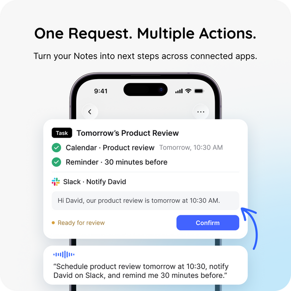

SpeakON Agent · 软硬结合 · 厂商公告
语音先变成可修改的笔记，再进入外部动作
2026-10-20T12:00:00Z · announcement-with-earlier-availability
同一项目的完整分析。主阅读页是摘要，本页正文独立计数一次；原截止14:08Z，修订采集在后。

厂商产品图：任务与动作界面；不是编辑实测。 ↗ 原始图证当日变化与日期边界
SpeakON 在10月20日08:00美东时间发布Agent公告，主张把口述意图变成可编辑笔记、结构化任务和经用户确认的动作。它面向经常在会议间隙、外勤或移动中整理消息的iPhone使用者；个人可能同时是使用者与付费者，小团队部署则还需管理者决定连接哪些工作账户，这是角色分析而非披露的客户分布。公告属于本期24小时窗口，但美国App Store已经在1.3.2版本记录中展示Agent功能，抓取显示10月12日或13日，时区对应关系不明。因此本期计一项新公告观察，不把Agent首次交付计作10月20日新品，也不把已有硬件重新计为一次发布。
输入入口：先接住想法
旧操作链是解锁手机、找到笔记或邮件、打字整理、复制到任务工具，再手工设提醒。官方展示的新入口有软件键盘与磁吸硬件按钮：选中SpeakON键盘，或按住设备按钮说话；当前有文本框时，整理后的文字进入所在应用；没有活动文本框时，内容保存为可编辑Note。用户仍需读回输出，确认人名、日期与否定词没有在去口头语和改写时被改变。离线能力是录音与之后同步，处理及在线AI功能需要网络；不能把锁屏捕捉或离线保存写成所有Agent动作都能离线完成。产品价值发生在捕捉和整理之间，跨应用执行是后续独立步骤。
从Note到Task：动作不能混为一谈
公告用一个具体例子解释Agent：把团队套餐改成年付的想法存下来，下周二提醒复查，并给Alex准备后续邮件。系统先生成Note，再把提醒和邮件整理为Task中的建议Actions；用户审阅并确认后，创建提醒、准备邮件。商店说明又列出发送邮件或Slack消息、创建日历事件等能力。两者不是同一个权限强度：准备草稿与发送消息应分别呈现，不能从公告中的草稿案例推断默认自动发送。产品经理要检查确认画面是否具体列出收件人、内容、执行时间和目标账户，而不是只提供一个笼统的“继续”。这些字段是否完整可见尚未实测，不能替厂商补齐。
状态与失败：停止不等于撤销
商店发行说明列出Live Activity和通知来展示任务进度，也记录修复某些场景下键盘卡在加载状态的问题；这是开发者发行声明，不是本次复现结果。官方Data Controls明确允许随时停止活动Agent任务、断开连接服务，但停止未来访问不一定撤销已经在第三方完成的动作。比如提醒创建成功、邮件发送失败，用户需要知道哪一步已完成，再决定是否重试，避免重复提醒或重复发送。我们未核实它是否提供逐动作回执、幂等重试或跨服务撤销。设计洞察是把任务进度和外部副作用拆开显示：生成完成、待批准、执行中、部分成功、已停止，各状态应有不同含义；这是本刊建议，不是新增功能清单。
数据路径与迁移成本
官网称用户可以关闭Cloud Sync，但Data Controls进一步说明，关闭跨设备保留不影响完成转写、编辑或笔记生成所必需的临时处理，词典与账户偏好仍可能同步。这意味着“不同步”不能解读为“完全本地推理”。连接服务只应取得所授权且完成任务需要的内容，用户可在相应设置断开。迁移成本不只是购买按钮：还包括启用键盘、管理网络访问、配对设备、建立专业词典、核对工作账户，以及训练使用者区分文本输出与真实外部动作。对受约束团队，先用无敏感内容验证权限与输出路径比把现有客户邮件全部接入更可审查；本期没有进行账户连接或真实发送。
费用与可用性：区分三个口径
发布公告把可用范围写为美国；这不能扩展成加拿大或全球已交付。官网列硬件加Pro Lifetime为129美元一次性购买、免费软件每周2000词，并提示部分高级Agent功能可能单独收费或使用credits；同一网站仍有Agent优先beta标签。美国App Store列软件订阅，不能把软件订阅价格与硬件终身权益当作同一套餐。Agent是否对所有账户开放、限时免费何时结束，以及未来动作额度，在本期材料中没有统一答案。采用决策应先确认所在地区、账户实际入口和动作收费，不用“一次性付费”替代完整成本核算。iPhone需iOS16或更新版本，Android入口未获确认。
替代方案与可检验价值
官网自己的比较对象是iPhone Dictation与Siri：SpeakON强调物理入口、文字整理、Note及语气控制，但这只是厂商定位，未提供公平的独立对照实验。对只需短句输入的人，既有听写加手工提醒可能已足够，额外硬件不必然创造价值；对长口述、频繁转成跟进动作的人，值得验证的是从捕捉到正确交接的完整耗时与错误，而非每分钟转写字数。最小试验可用同一组十条包含改口、同名联系人、跨日时间和双动作的模拟口述，分别用现有流程和SpeakON完成。记录需要纠正的字段、批准次数、重复动作及最终结果；若检查负担抵消输入收益，便推翻“更省心”的初始假设。
产品判断：把声音保留为意图证据
此产品最值得观察的不是“用声音替换键盘”的口号，而是Note作为可编辑中间物的作用。直接从原始口述跳到执行，会把省略、犹豫和临时想法变成难以回退的承诺；先保留想法、再形成任务，让用户在批准前有机会修正含义。跨端连续性也不应只指能看到同一篇笔记：手机的捕捉状态、云端处理状态与第三方的完成状态需要共同解释。我们的价值假设是，可审阅的中间物能减少遗漏的后续工作，同时保留负责人判断。现有材料足以确认厂商提供这条产品叙事和部分接口描述，尚不足以证明真实完成率、节省时长或长期留存；这些结果留待使用研究。
← 回到项目，继续翻页